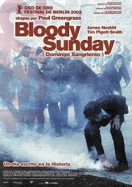
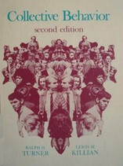
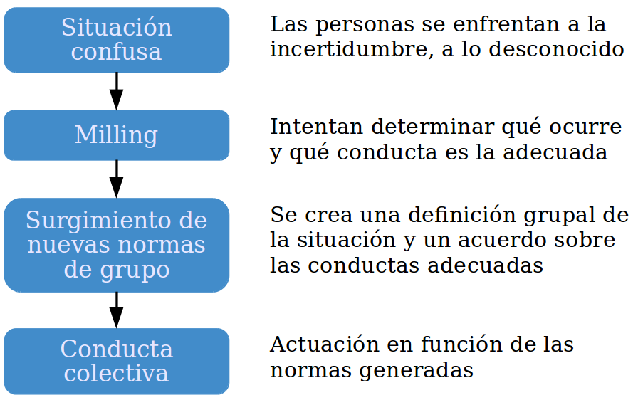

Acción Pública y Cambio Social
Normas e identidades
Juan Muñoz
Universitat Autònoma de Barcelona
http:/juan.psicologiasocial.eu

¿Quién es irracional?
Domingo Sangriento
https://www.youtube.com/watch?v=Yv5U0A10hrI

Greengrass (2002)
Ver: Ó Dochartaigh (2010)
Teoría de la Norma Emergente
Influencias: Interaccionismo simbólico
- El ser humano orienta sus actos hacia las cosas en función de lo que significan para él.
- El significado de estas cosas es consecuencia de la interacción social.
- Los significados se manipulan y modifican mediante la interpretación que la persona realiza al enfrentarse con el mundo.
Blumer (1969 p, 2)
Excitación colectiva
Cuando entra en relación con otros miembros de la masa, un individuo pierde su habitual comprensión crítica y auto-control y queda afectado por la excitación colectiva que la domina. Responde de forma inmediata y directa a los comentarios y conductas de los otros en vez de interpretarlos, como haría en su conducta ordinaria.
Blumer (1939, p. 180)
Interacción no interpretativa
Norma emergente: Principios

Turner & Killian (1957)
- La conducta de masa no es asocial ni irracional, está regulada por normas que emergen en la propia situación.
- La multitud es un espacio de interacción social en el que se desarrollan normas sociales.
El proceso

Identidad Social
Teoría de la Identidad Social

La propuesta de Steve Reicher
Si se deja de lado el exogrupo, no puede comprenderse que la violencia surja de un proceso de conflicto intergrupal. En su lugar se atribuye a la masa misma.
Reicher (1987, p. 240)
- Los miembros de la masa actúan en términos de una identidad social común.
- El contenido de la conducta de la masa estará limitado por la naturaleza de la categoría a la que pertenecen.
Los disturbios de St. Pauls
https://www.youtube.com/watch?v=Wdyo16VMhIQ
Ver: Reicher (1984)
Despersonalización
La despersonalización se refiere a los procesos de autoestereotipación por los que las personas se perciben a sí mismas más como casos intercambiables de una categoría social que como personalidades únicas definidas por sus diferencias individuales respecto a los demás.
Turner (1987, p. 50)
Críticas a la teoría de la norma emergente
- Su explicación de cómo emergen las normas es inadecuada para explicar las situaciones en las que la masa actúa y cambia rápidamente.
- Énfasis que ponen en el papel de los individuos prominentes en la emergencia de la norma.
Diferencias con Norma Emergente
- Las normas se obtienen observando cómo actúan otros, pero esos otros tienen que ser miembros de la categoría.
- No se trata de un proceso de creación, sino de inferencia, lo que permite explicar que las normas “surjan” rápidamente.
- De una multitud no puede surgir cualquier tipo de norma, sólo aquellas que están delimitadas por el contenido categorial.
Teoría de la autocategorización del yo
- Tiende a darse una relación inversa entre la saliencia de los niveles personal y social de categorización del yo
- Cuando nos vemos como miembros intercambiables de una categoría social, nos despersonalizamos
- La despersonalización de la percepción del yo es el proceso básico que subyace a los fenómenos de grupo
Modelo elaborado de identidad social
Reformulación
- La identidad social de los miembros de la masa, y por lo tanto sus actuaciones, dependen de las dinámicas intergrupales.
- Cuando una multitud hetereogénea es tratada de forma homogénea como una totalidad, se produce un cambio, una reconceptualización de los miembros redefiniéndose como una categoría común.
Protesta ambiental

La batalla de Westminster (24-11-1998)
Poll Tax Riots (31-3-1990)
¿Responsabilidad?
Las teorías de la multitud que explican la acción colectiva y la conducta colectiva en términos de patología de la masa, sirven para eliminar cualquier responsabilidad posible del Estado y sus fuerzas. Igualmente, en los relatos de nuestros entrevistados no hay lugar para abordar el papel de la policía en la producción de conflicto. La naturaleza de la multitud y sus dinámicas internas son en sí mismas explicaciones suficientes. En ningún momento en las entrevistas, ninguno de los oficiales sugieren que deben mirarse a sí mismos para una explicación de la violencia.
Stott & Reicher (1998, p. 519)
¿Y qué pasa con los hooligans?

Violencia fútbol
Port Said (1-2-2012)
Hillsborough (15-4-1989)
Referencias
Blumer, H. (1969). El Interaccionismo simbólico. Barcelona: Hora.
Blumer, H. G. (1939). Collective Behavior. In A. M. Lee (Ed.), Principles of sociology. (Second, pp. 167–222). New York: Barnes; Noble. Retrieved from http://hdl.handle.net/2027/mdp.39015022696119
Greengrass, P. (2002). Bloody Sunday. Retrieved from http://www.imdb.com/title/tt0280491/
Ó Dochartaigh, N. (2010). Bloody Sunday: Error or Design? Contemporary British History, 24(1), 89–108. http://doi.org/10.1080/13619460903565531
Reicher, S. (1987). Conducta de masa como acción social. In J. C. Turner (Ed.), Redescubrir el grupo social: Una teoría de la categorización del yo (pp. 235–273). Madrid: Ediciones Morata.
Reicher, S. D. (1984). The St. Pauls’ riot: An explanation of the limits of crowd action in terms of a social identity model. European Journal of Social Psychology, 14(1), 1–21. http://doi.org/10.1002/ejsp.2420140102
Stott, C., & Reicher, S. (1998). Crowd action as intergroup process: Introducing the police perspective. European Journal of Social Psychology, 28(4), 509–529. http://doi.org/10.1002/(SICI)1099-0992(199807/08)28:4<509::AID-EJSP877>3.0.CO;2-C
Turner, J. C. (1987). Rediscovering the social group: Self-categorization theory. Oxford, UK: Blackwell.
Turner, R. H., & Killian, L. M. (1957). Collective Behavior. Englewood Cliffs, NJ: Prentice-Hall.